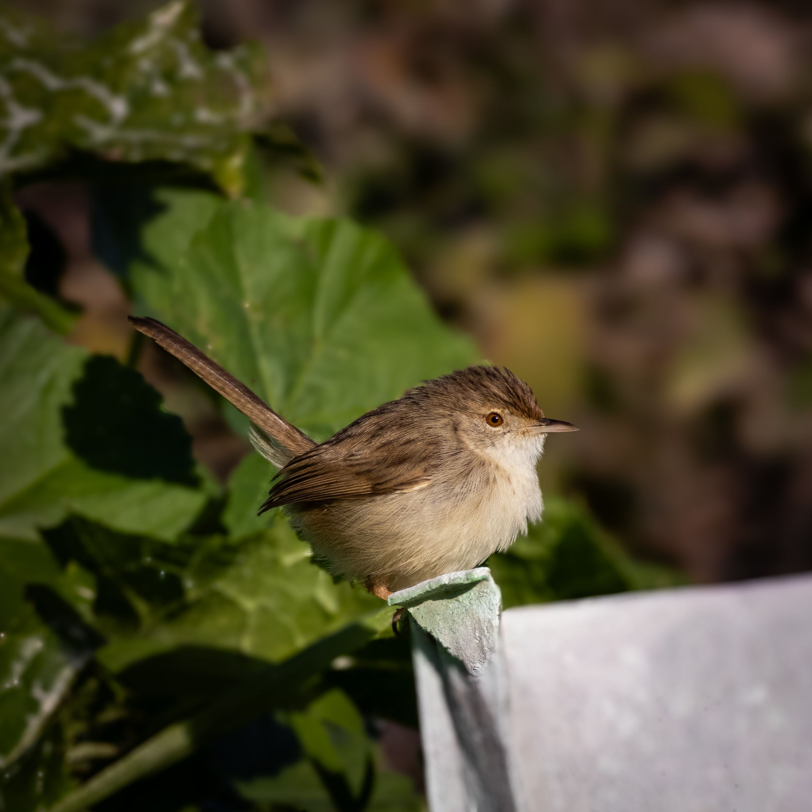

The Plain Prinia is a small brownish bird of grasslands, marshes, agricultural fields, and scrub. Its relatively plain plumage helps it blend into dry vegetation, while its long tail and active movements make it easier to recognize. It feeds primarily on insects and frequently climbs through grasses and bushes searching for prey. It can be distinguished from the Ashy Prinia by its generally browner, less grey appearance and plainer overall plumage. Compared with the similar Ashy Prinia, it is distinguished by the combination of features described above. Its preference for grasslands, marshes, wetlands, farmland, scrub, and open woodland also helps separate it from species that use different habitats. Its characteristic behaviour, including active and secretive; searches through grasses and low vegetation and often flicks its long tail, provides another useful field clue. Taken together, these differences make it easier to distinguish from similar species when the bird is seen clearly.